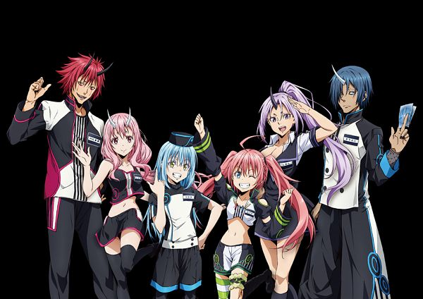

_Full_Art.png)
Meet Rimuru

Key Characters
- Shion - A loyal ogre and Rimuru’s right-hand woman, known for her strength and combat abilities.
- Benimaru - A powerful ogre and one of Rimuru's closest allies, serving as a general.
- Milim Nava - A powerful demon lord who becomes an ally to Rimuru.
- Soei - A ninja and one of Rimuru's trusted subordinates, skilled in stealth and espionage.